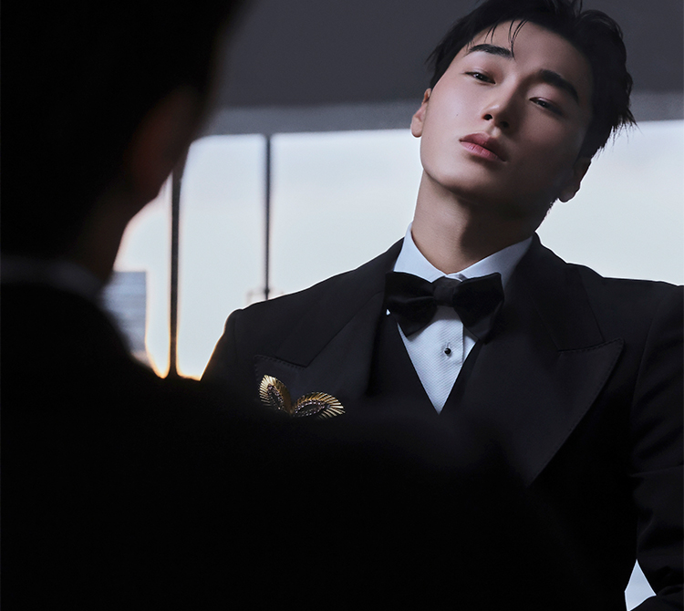

CHOI SAN · 최산
ATEEZ · 해적왕
TREASURE EP.1 :ALL TO ZERO
마우스를 움직여 시점을 바꿔보세요
에이티즈의 해적 콘셉트와 ‘해적왕(Pirate King)’을 바탕으로 만든 산의 비공식 팬 아트입니다. 함장 등 공식 세계관의 역할을 산에게 임의로 부여하지 않았습니다.
Viktor Oddy / MotionSites — AI Philosophy (Logios)제작자 게시물 · 공개 미리보기 영상
원작의 단색 배경, 큰 점군 인물, 비대칭 산세리프 배치를 참고했습니다. 원작의 소스 코드와 유료 프롬프트는 사용하지 않았습니다.
ATEEZ 공식 — 해적왕 MVSAN 사진 — Dolce&Gabbana 공식 화보 (2025.10)
사진에서 추정한 얼굴 랜드마크의 상대 깊이를 보간해 실제 XYZ 점군으로 만들었습니다. 머리카락·목·어깨는 보완한 표면입니다. 360도 스캔이나 정확한 두상 복원은 아니며 보이지 않는 뒷면을 과장하지 않도록 회전을 제한했습니다. WebGL을 지원하지 않는 환경에는 사진이 표시됩니다.
© 사진 및 원작 권리는 각 원저작자에게 있습니다. SAN·ATEEZ·KQ 또는 브랜드의 공식 사이트가 아닙니다.